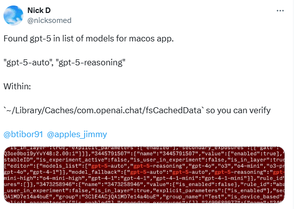
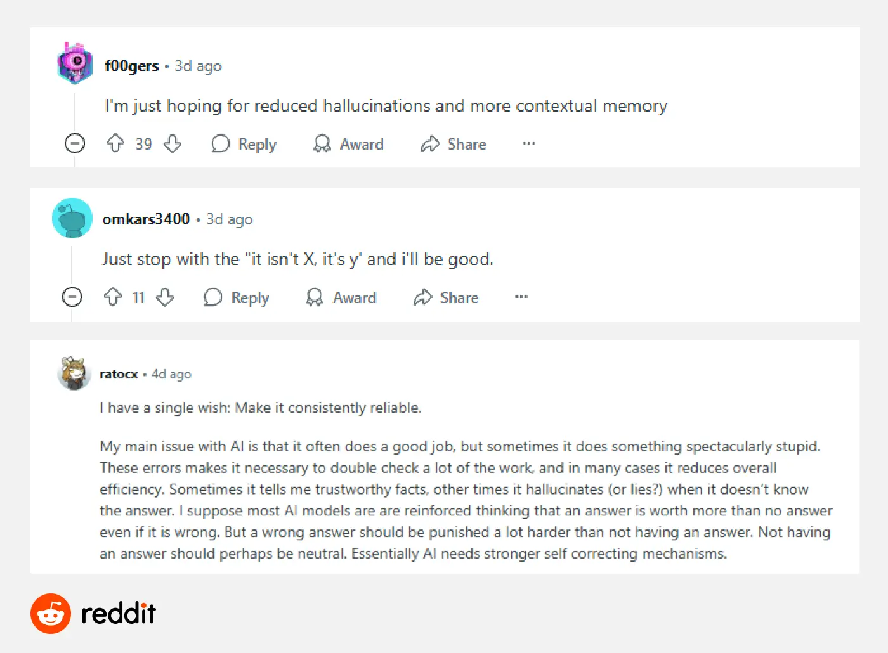
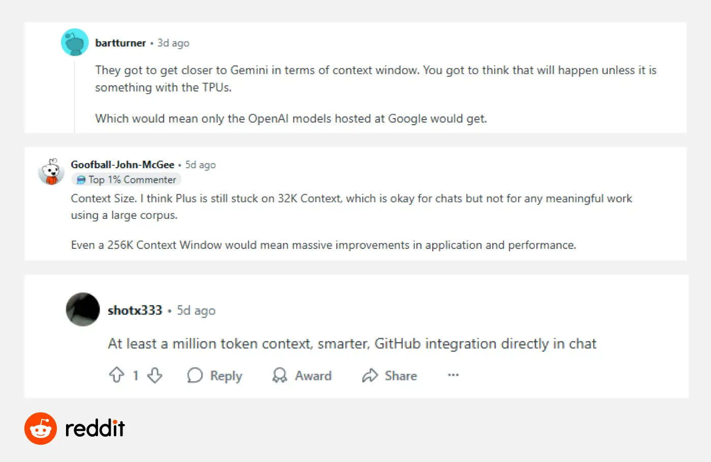
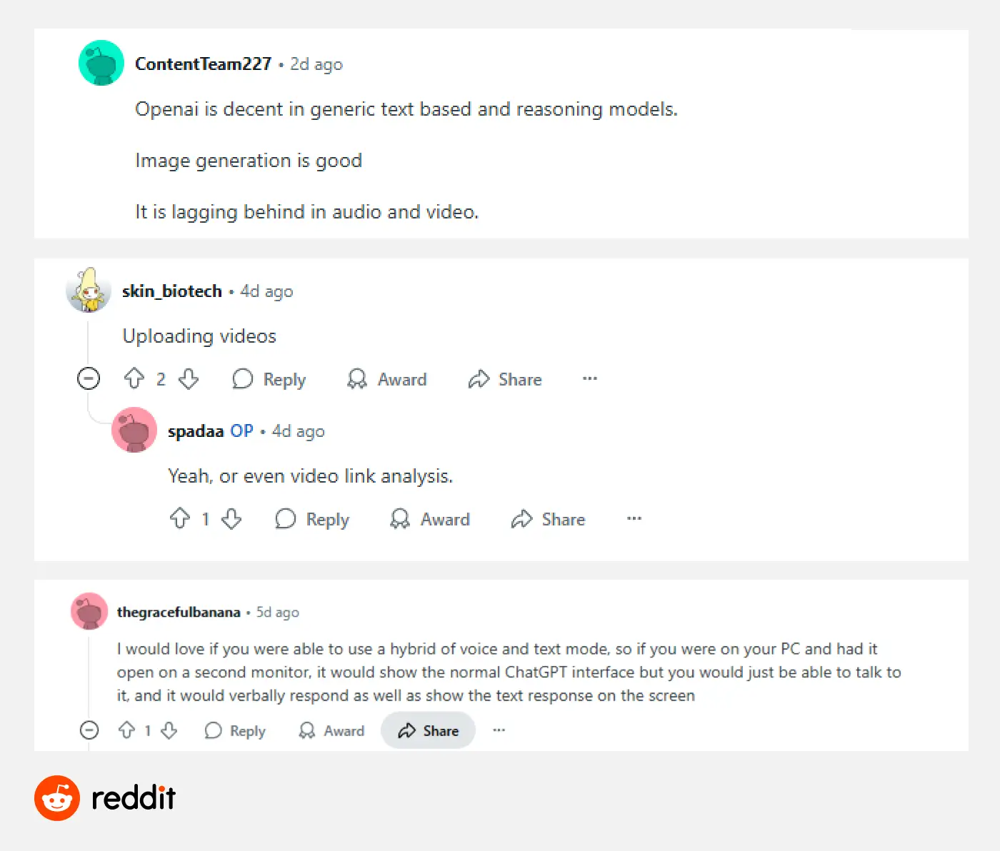
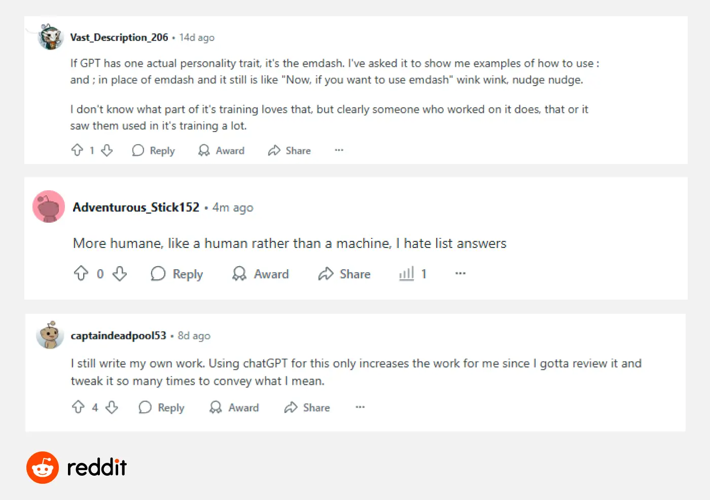

GPT 5：我们所知道的一切以及我们所期待的

OpenAI 首席执行官 Sam Altman 曾直言，GPT-4 是"你们任何人都将不得不再次使用的最愚蠢的模型"。这不仅仅是一个玩笑——这也是一个明确的预兆：
如今，这个关键时刻似乎指日可待。据Axios等多家媒体报道，GPT-5很可能在2025年8月正式发布。许多用户和专业人士都在密切关注：它会带来哪些重大突破？它会重塑我们对AI能力的理解吗？
带着这些问题，我咨询了多位专业人士，并查阅了大量用户讨论和公开资料。本文整理了目前关于 GPT-5 的所有已知信息，并重点突出了读者最关心的要点 —— 探索这一新一代模型可能带来哪些改变。
我们目前所知
什么是 GPT-5？
GPT-5 是 OpenAI 目前正在开发的下一代大型语言模型。它将接替 GPT-4，成为 ChatGPT 背后的新"大脑"。虽然它基于与之前的 GPT 模型相同的核心架构，但预计将在语言理解、文本生成和多任务处理能力方面实现重大升级。
GPT-5 何时发布？
根据目前已公开的信息，GPT-5 已于 2025 年 8 月正式发布。此次发布标志着 OpenAI 在通用大模型能力上的又一次重要升级，也验证了此前外界对其发布时间的普遍预测。
在发布之前的数月里，OpenAI CEO Sam Altman 曾多次在公开场合暗示 GPT-5 将于 2025 年夏季推出。7 月 19 日，他在 X 上发文表示“GPT-5 即将到来” ，这一表态在当时被视为正式发布前的重要信号。
与此同时，包括 The Verge 和 Yahoo Tech 在内的多家媒体此前也报道称，GPT-5 已进入内部测试阶段。如今随着 8 月正式发布，这些报道已得到进一步印证，表明当时确实处于发布前的最后准备阶段。
谁可以使用 GPT-5？
Altman 实际上已经在 X 上对谁可以使用 GPT-5给出了相对清晰的解释。他写道：
这意味着 GPT-5 将不再像 GPT-4.5 那样仅限于付费用户——
虽然"标准智能"和"更高智能"之间的确切区别尚未明确定义，但可以合理预期，订阅用户可能会继续在上下文长度、响应速度和功能访问等方面享受更完整的体验。
如果你想提前试用功能更强大的 GPT-5 版本，但又不想支付官方订阅的全价，可以考虑通过 GamsGo 购买ChatGPT Plus 帐户。它价格实惠、安全可靠，并且提供与官方版本相同的体验。
GPT-5 可能带来的改进
首先，我想明确指出，在模型正式发布之前，对 GPT-5 能力的任何判断都仍是推测性的。
不过，根据 Sam Altman 的公开声明以及前几代车型的发展路径，我们仍然可以提取一些有用的线索。
以下是我们认为最有可能出现在 GPT-5 中的关键改进：
模型集成
Altman 最近在 X 上表示，GPT-5 是一个"整合了多种 OpenAI 技术（包括 o3）"的系统，并明确表示 o3 未来将不再作为独立模型发布。他还承认，拥有多种模型选项已经让很多用户感到困惑。
与此说法相呼应的是，一些用户和开发者在 macOS 应用程序的配置缓存文件中发现了对"
根据命名，这两种模式可能分别对应于一般任务处理和增强推理能力。
此外，AI推理云提供商Hyperbolic Labs联合创始人兼CTO金宇辰7月19日在X上发文透露：
综合起来，这些迹象强烈表明 GPT-5 很可能正在测试一个"
用户可以在通用模式（自动）和增强推理模式（推理）之间切换，或者让系统自动确定任务类型并分配最合适的模型，而无需手动输入。
如果这一模型策略能够全面实施，GPT-5 可以显著减少用户在模型切换时遇到的阻力。与之前的多模型设置相比，这种集成方法将更加实用。
更强的推理能力
在推理方面的升级上，Altman 在 X 上明确表示，
思维链是指让模型像人类一样一步一步思考，而不是直接给出答案。这种方法已经在 Claude 等模型中得到了验证。
在我们过去对ChatGPT 替代方案的测试中，我们也注意到 Claude 在处理复杂逻辑问题时表现非常出色。显然，OpenAI 也在朝着这个方向加速发展。
事实上，早在 GPT-5 发布之前，OpenAI 就已开始将"思维链"推理机制融入 o 系列模型。2025年 4 月发布的
Altman 还在播客上分享了一段亲身经历：他曾经收到一封难以理解的电子邮件，并将其转发给 GPT-5。该模型的回应"非常好，非常准确"，这让他惊呼"我感觉自己完全没用了"。
虽然这是一个轻松的时刻，但它间接反映了 GPT-5 在处理复杂推理任务方面的实力。结合 OpenAI 在过去几代模型中在推理方面的不断改进，我们有充分的理由期待 GPT-5 在处理复杂任务方面达到新的水平。
增强的内存功能
2025年4月，OpenAI对ChatGPT的记忆功能进行了重大升级。当时，Altman在X上写道：
他还将这项功能描述为"出乎意料的好"。从他的说法来看，记忆不仅仅是一次产品更新——它似乎是 OpenAI 长期战略的一部分。
GPT-5 可能会进一步扩展这种记忆机制。它不仅可以简单地记住用户提供的详细信息，还可以更好地理解个人偏好，在多轮对话中保持一致性，并更有效地传递上下文，从而极大地改善整体交互体验。
我们希望看到
尽管有关 GPT-5 的信息尚不完整，它实际上会带来什么也不确定，但我们以及许多 GamsGo 读者已经反复提到过一些变化，并且大多数人希望在 GPT-5 中看到这些变化：
幻觉减少
如果说人们最期待的改进只有一个，那肯定是
许多用户希望，当 GPT 遇到知识缺口时，它能够坦然承认"我不知道"，而不是自信地生成看似合理但实际上错误的答案。在处理敏感或复杂话题时，保持中立（而不是默认同意用户的观点）同样重要。
其核心
如果 GPT-5 能够提高其推理和思考能力，它不仅可以减少幻觉，还可以大大增强其在科学写作、代码生成和结构化任务中的实用性。
更长的上下文窗口
ChatGPT 目前最明显的限制之一是其有限的"内存"范围。虽然 GPT-4o 已经支持
在实际使用中，我们经常会遇到这样的问题，比如上传几十页的PDF，结果只得到前半部分的答案，或者针对某个主题进行后续提问，发现模型忘记了之前的结论。
因此，扩展上下文窗口被广泛视为 GPT-5 的预期关键升级之一。尽管 OpenAI 尚未分享具体数字，但如果我们观察从 GPT-3 到 GPT-4 的发展趋势，就会发现每一代都在稳步增加上下文长度。
我们有理由期待 GPT-5 能够更有效地处理更长的文本，从而显著改善长文档理解能力，并在延长的对话中保持一致性。
更强大的多式联运能力
在图像生成方面，ChatGPT 已经相当成熟——输出稳定且质量不错。
Sora 展现了 OpenAI 在视频生成方面的潜力，但渲染速度慢、细节控制有限是用户普遍抱怨的问题。与此同时，许多人希望能够改进输入功能（例如上传视频文件或分析视频内容），使视频交互真正变得可用。
语音方面也存在类似的问题，目前的语音音调不够自然，响应延迟明显，多轮语音对话的流畅度还有待提升。
有用户建议在桌面环境中实现语音和文本的集成交互，例如通过语音提问，并在屏幕上以文本形式显示答案，以提高整体交互效率。
GPT-5 能否在这两个领域取得突破，值得关注。正如微软 AI 首席执行官穆斯塔法·苏莱曼所说，AI 助手应该能够"听到你所说的话，看到你所看到的东西，并同时与你互动"，并最终能够采取行动。
更人性化的互动
尽管每一代模型在语言能力上都有所提高，但 ChatGPT 的输出仍然常常让人感觉明显"
对于经常使用 ChatGPT 进行写作的用户来说，这一点尤其明显——结构很简洁，但逻辑可能跳跃，语气平淡，缺乏人类语言的自然节奏和对话感。
GPT-4.5 在句子结构和语气方面取得了一些进步，但距离真正"像人一样说话"还很远。用户的期望不仅仅是措辞的润色，他们更希望的是沟通方式的转变，而不仅仅是信息倾倒或模板化的回复。
Character AI 等对话工具的流行也反映了这一趋势：用户希望互动能够感受到情感，并且更具吸引力。
这就是为什么人们对 GPT-5 寄予厚望——不仅要提高语言丰富度，还要在语境和情感理解方面取得真正的进步，并更接近真正的类人互动。
结论
关于 GPT-5，我们已经有一些令人兴奋的线索和一些有希望的升级方向值得期待。
从模型集成、扩展上下文窗口到更自然的表达风格，用户关心的许多痛点似乎都有可能在 GPT-5 中得到解决。
但其是否真的能够实现这些改进，仍有待时间验证。我们将持续关注 GPT-5 的发布进度，并在正式发布后第一时间分享我们的上手体验。
如果你不仅对 GPT-5 感兴趣，还想探索 Claude、Gemini、Perplexity 等其他领先模型，不妨尝试一下GamsGo AI——一个价格实惠的一体化 AI 服务平台，让你以更低的成本体验前沿的 AI 技术。
常问问题
ChatGPT 5 发布了吗？
截至目前，GPT-5 尚未正式发布。OpenAI 首席执行官 Sam Altman 表示，该模型预计将于 2025 年夏季推出。多家媒体预测该模型将于 8 月发布。目前，它仍处于最终测试阶段。
ChatGPT 5 将会做什么？
ChatGPT 5 预计将在模型架构上进行升级，集成包括 o3 在内的多项 OpenAI 技术。根据目前的信息，它可能在理解复杂任务和处理图像、语音等多种输入类型方面表现更佳，从而提升整体交互体验。
我可以免费使用 ChatGPT 5 吗？
是的。根据 OpenAI 首席执行官 Sam Altman 在 X 上的声明，ChatGPT 5 预计将为免费用户提供基本访问权限。不过，订阅用户将可以访问智能级别更高、功能体验更完善的版本。